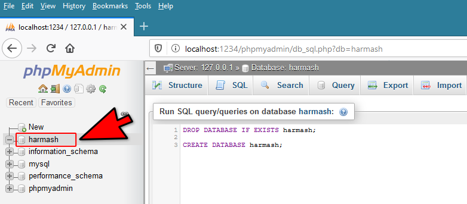
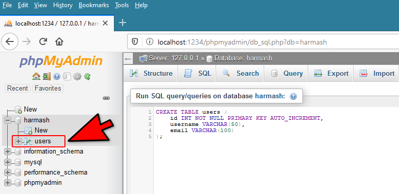
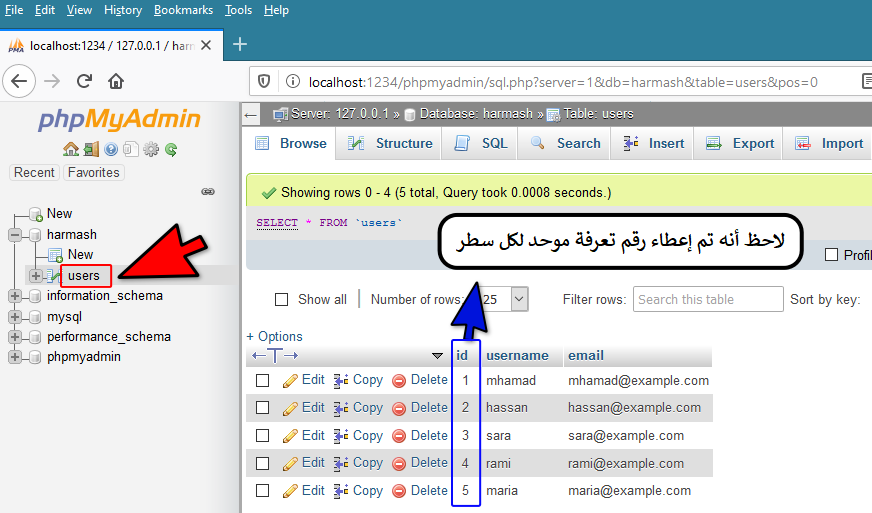

SQLالترقيم التلقائي
مفهوم الترقيم التلقائي للأسطر
ببساطة فكرته أن يتم وضع رقم موحد لكل سطر يتم إضافته في الجدول و بشكل تلقائي مما يمكنك لاحقاً من العودة إلى هذا السطر بكل سهولة من خلال رقمه.
بشكل عام, كلما أنشأنا جدول جديد نضيف فيه حقل يتم ترقيمه بشكل تلقائي و في العادة نقوم بتسميته id و نقول له باللغة العربية رقم التعرفة.
في هذا الدرس ستتعلم كيف تجعل كل سطر يضاف يحصل على رقم موحد, و في دروس لاحقة ستتعلم كيف تستفيد من هذا الرقم في عمليات البحث, تحديث المعلومات, حذف المعلومات, إنشاء العلاقات بين الجداول, إنشاء فهارس إلخ..
الحصول على ترقيم تلقائي
لإنشاء عامود في الجدول يتم وضع ترقيم لأسطره بشكل تلقائي في قواعد بيانات MySQL يجب أن يتم تعريف نوع هذا العامود كالتالي.
column_name INT NOT NULL PRIMARY KEY AUTO_INCREMENT
مكان الكلمة column_name نضع إسم العامود الذي سيتم إنشاؤه في الجدول.
INT تعني أن العامود سيوضع فيه أعداد صحيحة.
NOT NULL تعني أن العامود لا يمكن أن يكون فارغ و هذا الأمر منطقي لأنه سيتم وضع رقم تلقائي لكل سطر يتم إضافته في الجدول.
PRIMARY KEY تعني أن هذا الحقل لا يمكنه أن يحتوي على رقم متكرر و لهذا يعتبر المفتاح الرئيسي للوصول لأي سطر (أو سجل) موجود في الجدول.
AUTO_INCREMENT تعني أن الأرقام التي ستزيد قيمتها بشكل تلقائي لكل سطر.
إختلاف الأوامر بين قواعد البيانات
نود الإشارة إلى أن الترقيم التلقائي موجود في كل قواعد البيانات و لكن قد تجد أنهم يستخدموا كلمة أخرى بدلاً من الكلمة AUTO_INCREMENT و إليك بعض الأمثلة:
في قواعد بيانات Access و SQLite نكتب AUTOINCREMENT بدلاً منها.
في قواعد بيانات SQL Server نكتب IDENTITY(1,1) بدلاً منها.
في النهاية, مهما كان نوع قاعدة البيانات التي ستتعامل معها, فكرة الترقيم التلقائي هي نفسها تماماً.
تجهيز قاعدة البيانات التي سنطبق عليها
بما أننا سنتعلم كيف ننشئ عامود في الجدول يتم إعطاء كل سطر فيه رقم بشكل تلقائي, سنقوم بتجهيز قاعدة البيانات التي سنتعامل معها.
قم بتنفيذ الإستعلام التالي حتى تنشئ قاعدة بيانات جديدة إسمها harmash.
الإستعلام
-- سيتم حذفها harmash في حال كان يوجد بالأساس قاعدة بيانات إسمها
DROP DATABASE IF EXISTS harmash;
-- harmash هنا قمنا بإنشاء قاعدة بيانات جديدة إسمها
CREATE DATABASE harmash;
بعد تنفيذ الإستعلام السابق في phpMyAdmin سيتم إنشاء قاعدة البيانات harmash و إنشاء الجدول users بداخلها كالتالي.

الآن, قم بالنقر على إسم قاعدة البيانات harmash من القائمة اليسرى حتى تبدأ بالتعامل معها.
إنشاء جدول يعطي ترقيم تلقائي لكل سطر يضاف فيه
قم بتنفيذ الإستعلام التالي لإنشاء جدول جديد إسمهusers و يتألف من 3 أعمدة.
لاحظ أننا قمنا بوضع خاصية AUTO_INCREMENT للعامود الأول لأننا نريد جعل قيمته تزيد بشكل تلقائي في كل سطر نضيفه في الجدول.
الإستعلام
CREATE TABLE users (
id INT NOT NULL PRIMARY KEY AUTO_INCREMENT,
username VARCHAR(50),
email VARCHAR(100)
);
بعد تنفيذ الإستعلام السابق في phpMyAdmin سيظهر الجدول في قاعدة البيانات كالتالي.

إضافة سطر في جدول يعطي ترقيم تلقائي
قم بتنفيذ الإستعلام التالي لإضافة خمسة سطور جديدة في الجدول users.
لاحظ أننا لم نذكر إسم العامود id و لم نمرر له قيمة و ذلك لأن قاعدة البيانات ستضع قيمة في الحقل id لكل سطر يتم إنشاؤه.
الإستعلام
INSERT INTO users (username, email) VALUES ('mhamad', 'mhamad@example.com');
INSERT INTO users (username, email) VALUES ('hassan', 'hassan@example.com');
INSERT INTO users (username, email) VALUES ('sara', 'sara@example.com');
INSERT INTO users (username, email) VALUES ('rami', 'rami@example.com');
INSERT INTO users (username, email) VALUES ('maria', 'maria@example.com');
الآن, أنقر على إسم الجدول users لرؤية جميع الأسطر التي أضفتها فيه كالتالي.

لاحظ كيف تم إعطاء رقم موحد لكل سطر في الحقل id بشكل تلقائي.
في الدرس التالي سترى كم هو مهم وضع رقم موحد لكل سطر و كيف نتعامل معها.


 محرر الويب
محرر الويب نظام الألوان
نظام الألوان محول الوحدات
محول الوحدات محلل عناوين الشبكات
محلل عناوين الشبكات